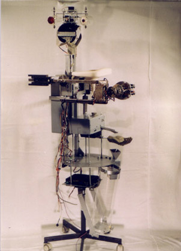

|  |
.............. Bar Bot (HRL)
Bier-trinkender Roboter der Linzer Gruppe
HRL (Humanoid Robotics Laboratory)
Die Kybernetiker sind auf dem Weg, künstliche und menschliche
Intelligenz immer mehr anzunähern. Das vorgestellte Modell
arbeitet mit einem Schnorr-Modul und kann ca. 20 Liter Bier trinken.
winning award Kat.5, 2003.
|